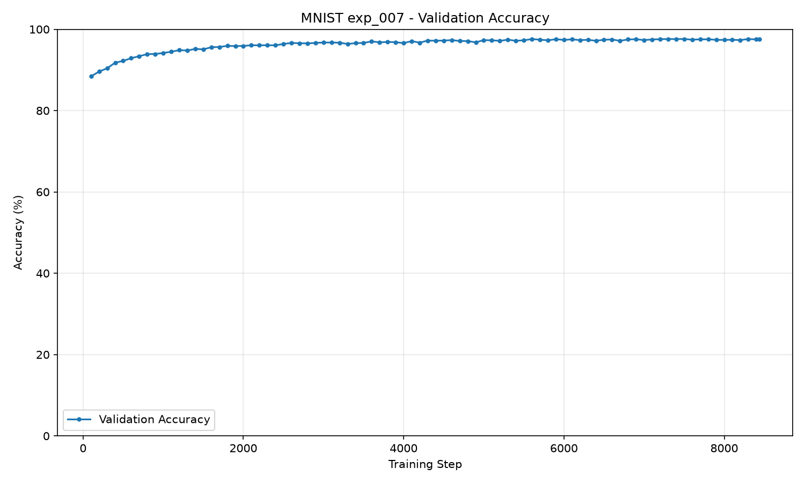

PROJECTS & EVIDENCE用作品回答学过什么。
每一项技能都尽量对应具体的开发工作或实验。点击项目查看工作范围与技术细节。
项目与实验
03 个实践方向SKILLS / WITH EVIDENCE
技能来自实际动手
这里只展示已经在项目或实验中使用过的工具和方法，不给自己贴能力等级标签。
HTML · CSS · JavaScript在失物招领系统中实现表单、信息列表、关键词搜索、联系方式脱敏和 LocalStorage 保存。
查看项目依据 ↗ Git · GitHub · Electron在 MixTunes 功能改进中参与代码开发、自动化测试与 Pull Request 提交。
查看项目依据 ↗ Python · PyTorch · NumPy · CUDA在 MNIST 实验中搭建 MLP，完成训练、验证和不同超参数的对比。
查看实验依据 ↗ 失物招领 · 本地保存
摘自实际项目的单文件代码；原文件压缩过，变量名较短。
localStorage.setItem(t,JSON.stringify(d))
来源：失物招领系统 index.htmlMixTunes · 播放歌曲定位
定位前先检查当前歌曲、来源歌单和队列是否仍有效。
if (!state.currentKey) return { message: '暂无正在播放的歌曲。' };
if (!state.playbackPlaylistId) return { message: '当前歌曲为搜索试听，没有来源歌单。' };
来源：MixTunes app/ui/locate-playing.jsMNIST · 实验记录
exp_007 将训练轮数从 5 增至 10，最佳验证准确率为 97.60%（Step 7300）。这是一次训练的验证集结果。

验证准确率曲线 · exp_007查看实验时间线 ↗继续积累，持续更新。
后续可加入论文阅读、算法竞赛、课程项目与科研经历；只有实际完成后才写入作品集。
查看学习轨迹 ↗